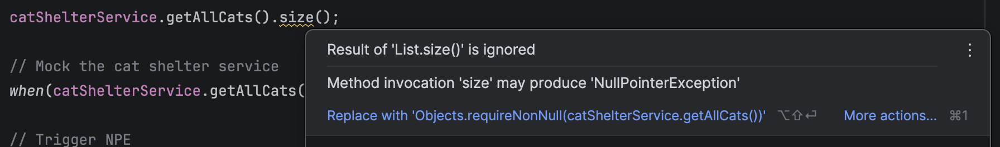
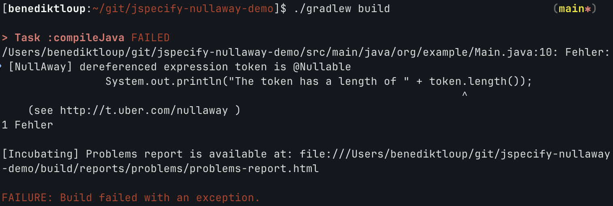

A billion dollar problem:
Proper null handling in Java
Who am I?

- Benedikt Loup
- 32 years old
- Software Engineer at OpenValue
- Father of a one-year old son
- President of a local carnival club
Who am I?
Roadmap
- What actually is null?
- A billion dollar problem?
- Classic null checks
- Optionals
- Annotation-based approaches
- Structured exception handling
- Outlook: Null-restricted value class types
- Conclusion
1. What actually is null?
1. What actually is null?
- Null means having no value.
- In other words: Points in no direction.
- Reference to the zero address in memory.
- JVM proactively checks that
- Prevents "Illegal operation" crashes
1. What actually is null?
// Primitives: Can't be null by design
byte var1 = null;
short var2 = null;
int var3 = null;
long var4 = null;
float var5 = null;
double var6 = null;
char var7 = null;
boolean var8 = null;
- Primitive types can't be null.
- Actual value is stored on the stack.
- Will throw errors during build
1. What actually is null?
// Primitives: Can't be null by design
byte var1 = 0;
short var2 = 0;
int var3 = 0;
long var4 = 0;
float var5 = 0;
double var6 = 0;
char var7 = 0;
boolean var8 = false;
- Primitive types can't be null.
- Actual value is stored on the stack.
- Will throw errors during build
- Only default values allowed
1. What actually is null?
// Reference-types: Can be null by design
Byte var1 = null;
Short var2 = null;
Integer var3 = null;
Long var4 = null;
Float var5 = null;
Double var6 = null;
Character var7 = null;
Boolean var8 = null;
- Reference-types can be null.
- Value's heap address is stored on the stack
- Applies to all objects
2. A billion dollar problem?
2. A billion dollar problem?
"I call it my billion-dollar mistake. It was the invention of the null reference in 1965. At that time, I was designing the first comprehensive type system for references in an object oriented language (ALGOL W). My goal was to ensure that all use of references should be absolutely safe, with checking performed automatically by the compiler. But I couldn't resist the temptation to put in a null reference, simply because it was so easy to implement. This has led to innumerable errors, vulnerabilities, and system crashes, which have probably caused a billion dollars of pain and damage in the last forty years."
- Tony Hoare, 2009
2. A billion dollar problem?
- Null can be everywhere in Java.
- The problem? This can cause exceptions anytime.
- Nullability is not always clear on first sight.
- External libraries make this even worse.
2. A billion dollar problem?
record Cat(String name) {}
Cat myCat = new Cat(null);
int len = myCat.name().length();
System.out.println("My cat's name has " + len + " letters");
2. A billion dollar problem?
record Cat(String name) {}
Cat myCat = new Cat(null);
int len = myCat.name().length();
System.out.println("My cat's name has " + len + " letters");
Output:
Exception in thread "main" java.lang.NullPointerException at Demo.main(Demo.java:5)
2. A billion dollar problem?
record Cat(String name) {}
Cat myCat = new Cat(null);
int len = myCat.name().length();
System.out.println("My cat's name has " + len + " letters");
2. A billion dollar problem?
class CatShelter implements Shelter<Cat> {
// ...
@Override
public List<Cat> getAnimals() {
return cats;
}
}
Shelter shelter = new CatShelter();
// ...
String name = shelter.getAnimals().getFirst().name();
System.out.println("The first cat's name is " + name);
2. A billion dollar problem?
class CatShelter implements Shelter<Cat> {
// ...
@Override
public List<Cat> getAnimals() {
return cats;
}
}
Shelter shelter = new CatShelter();
// ...
String name = shelter.getAnimals().getFirst().name();
System.out.println("The first cat's name is " + name);
Output:
Exception in thread "main" java.lang.NullPointerException at Demo.main(Demo.java:13)
2. A billion dollar problem?
class CatShelter implements Shelter<Cat> {
// ...
@Override
public List<Cat> getAnimals() {
return cats;
}
}
Shelter shelter = new CatShelter();
// ...
String name = shelter.getAnimals().getFirst().name();
System.out.println("The first cat's name is " + name);
2. A billion dollar problem?
@Inject Shelter shelter;
public int countLettersInFirstAnimalsName() {
return shelter.getAnimals().getFirst().name().length();
}
2. A billion dollar problem?
@Inject Shelter shelter;
public int countLettersInFirstAnimalsName() {
return shelter.getAnimals().getFirst().name().length();
}
Output:
Exception in thread "main" java.lang.NullPointerException at Demo.main(Demo.java:4)
2. A billion dollar problem?
@Inject Shelter shelter;
public int countLettersInFirstAnimalsName() {
return shelter.getAnimals().getFirst().name().length();
}
2. A billion dollar problem?
- Good news: Since JDK 14 null pointer exceptions are more helpful.
Example (< JDK 14):
// Caused an NPE
String name = shelter.getAnimals().getFirst().name();Exception in thread "main" java.lang.NullPointerException at Demo.main(Demo.java:4)
2. A billion dollar problem?
- Good news: Since JDK 14 null pointer exceptions are more helpful.
Example (>= JDK 14):
// Caused an NPE
String name = shelter.getAnimals().getFirst().name();Exception in thread "main" java.lang.NullPointerException: Cannot read field "name" because the return value of "java.util.List.getFirst()" is null at Demo.main(Demo.java:13)
3. Classic null checks
3. Classic null checks
if (myObject != null) {
// Do something
} else {
// Error handling
}
3. Classic null checks
if (myObject != null) {
// Do something
} else {
// Error handling
}
- Checks the object reference for being null
- Easy to apply
- Low complexity
- No additional dependencies required
- But: Readability could suffer
3. Classic null checks
@Inject Shelter shelter;
public int countLettersInFirstAnimalsName() {
return shelter.getAnimals().getFirst().name().length();
}
3. Classic null checks
@Inject Shelter shelter;
public int countLettersInFirstAnimalsName() {
if (shelter != null) {
var animals = shelter.getAnimals();
if (animals != null) {
var animal = animals.getFirst();
if (animal != null) {
var name = animal.name();
if (name != null) {
return name.length();
}
// Error: Animal's name is null
}
// Error: Animal with given index is null
}
// Error: List of animals is null
}
// Error: Shelter is null
}
4. Optionals
4. Optionals
- Introduced in JDK 8
- Wraps nullable objects safely.
get()returns the value, if existing- Indicates the developers to handle the empty-case.
- Chaining (Java Stream API) improves null-handling even further.
4. Optionals
-
Option 1: Return
Optional<T>in your methods -
Option 2: Wrap nullables in
Optional.ofNullable(x) -
isEmpty(),isPresent()to check availability
4. Optionals
public class Cat {
public Cat(String name) {
this(name, null);
}
public Cat(String name, Race race) {
this.name = name;
this.race = race;
}
}
4. Optionals
public class Cat {
public Cat(String name, Optional<Race> race) {
this.name = name;
race.ifPresent(optRace -> {
this.race = optRace
});
}
}
// ...
var cat = new Cat("Amy", null); // Still fine
4. Optionals
@Inject Shelter shelter;
public int countLettersInFirstAnimalsName() {
return Optional.ofNullable(shelter)
.map(Shelter::getAnimals)
.map(List::getFirst)
.map(Animal::name)
.map(String::length)
.orElse(0); // .orElseThrow(...)
}
4. Optionals
public void updateCat(int id, CatDto dto) {
// Spring JPA repositories also return Optionals
catRepository.findById(id).ifPresent(cat -> {
// Update name
Optional.ofNullable(dto.getName())
.ifPresent(cat::setName);
});
}
5. Annotation-based approaches
5. Annotation-based approaches
- Indicate nullability with annotations.
- Natively included in the JDK (JSR-305).
- Provided by many different frameworks/tools.
- Findbugs
- Lombok
- Checker Framework
- Eclipse
- IntelliJ
5. Annotation-based approaches
- A standard is missing for years.
- Uncontrolled growth has happened.
- @NonNull, @Nonnull, @NotNull
- Which to choose?
- Different libraries can be mixed up pretty easy.
5. Annotation-based approaches
- JSpecify to the rescue!
- Annotation set developed by several organizations (i.e., Google, JetBrains, Meta, Microsoft, Oracle, Sonar)
- Not a tool itself (!), but a precise specification.
- Introduced in Spring Boot 4 and Spring Framework 7
5. Annotation-based approaches
// Value of this type SHOULDN'T be null
@NonNull
public Long id;
// Value of this type CAN be null
@Nullable
public String fullName;
5. Annotation-based approaches
// Value of this type SHOULDN'T be null
public void doSomethingSafe(@NonNull String instruction) {};
// Value of this type CAN be null
public void doSomething(@Nullable String beCarefulWithThis) {};
5. Annotation-based approaches
// Value of this type SHOULDN'T be null
public @NonNull String doSomethingSafe(String instruction) {};
// Value of this type CAN be null
public @Nullable String doSomething(String instruction) {};
5. Annotation-based approaches
- Java's nullability is unspecified by default.
@NullMarkedcan be used to change that.- Everyting is treated as
@NonNull - Can be applied to modules, packages, classes, interfaces.
@NullUnmarkedcan be used as exclusion.
5. Annotation-based approaches
5. Annotation-based approaches
5. Annotation-based approaches
- IDE warnings can be ignored or missed.
- NullAway (Uber) checks this at buildtime.
- Breaking builds early
- Helps building null-robust code.
5. Annotation-based approaches
6. Structured exception handling
6. Structured exception handling
- 'Alternative' for checking and preventing NPEs
- Increase resilience by catching runtime exceptions
- Problem: Not always clear what typically can happen when.
6. Structured exception handling
// Catch all exceptions right away is
try {
SpringApplication.run(App.class, args);
} catch (Exception e) {
// ... not always the best idea
}
6. Structured exception handling
try {
checkPreconditions();
doSomething();
} catch (Exception preException) {
// Indicate issues with the preconditions
} catch (Exception doException) {
// Indicate issues with the action itself
} catch (Exception fallback) {
// No exception matches
}
6. Structured exception handling
try {
checkPreconditions();
doSomething();
} catch (Exception preException) {
// Indicate issues with the preconditions
} catch (Exception doException) {
// Indicate issues with the action itself
} catch (Exception fallback) {
// No exception matches
}
- Choose wise locations and exception types to catch.
- As narrow as possible, as wide as needed
- Handle issues properly with error messages, logs etc.
- Fallback case should return app to safe state.
Outlook: Null-restricted value class types
Outlook: Null-restricted value class types
- JEP-401 (project Valhalla) introduces value classes.
- Flattening objects to be stored on the stack.
- Improvements of the memory footprint and performance.
- Should be non-null by design
- But: Extra bits are required to encode null (yet).
Outlook: Null-restricted value class types
- A JEP-draft discusses introducing null-restricted value class types.
- Additional memory savings due to spare null-bits
- Performance like value classes while being null-safe
Outlook: Null-restricted value class types
value record Cat(String! name) {};
Cat cat = new Cat(null) // Not possible anymore!
Conclusion
Conclusion
- As always: There is no 'one size fits all'.
- Choose what your team could handle best.
- Null checks and structured exception handling aren't ideal.
- Working with Optionals is a good trade-off.
- JSpecify requires changes in build pipelines.
- Null-restricted value classes could be a game-changer.